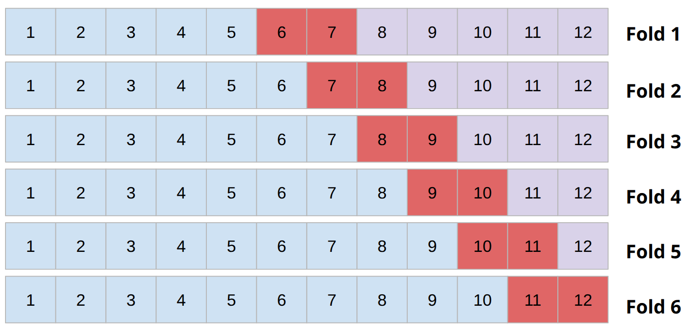
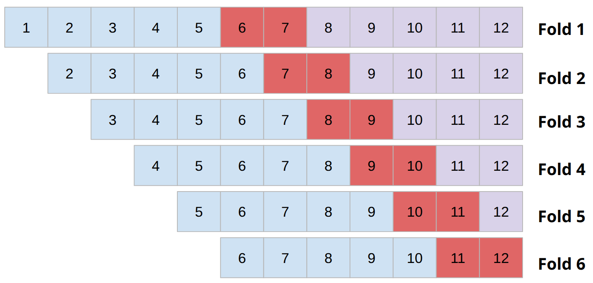

Point forecast error
We will evaluate the accuracy of forecasts from each model to decide which is best. This is done by measuring the difference between:
- The model’s predictions (ŷ) (also written as “Y hat” or
y_hat). - The actual observed values (y).
These errors use the point forecast - a single estimated value for a future event (as opposed to prediction intervals, covered below).
Scale-dependent errors
Sources: Suleman (2024), Hyndman and Athanasopoulos (2021)
These measures are scale-dependent, meaning that forecast errors are on the same scale as the data, and they cannot be used to make comparisons between series that involve different units.
Mean absolute error (MAE) - average of the absolute differences between the actual and predicted values.
- ✅ Easy to understand and interpret.
- ✅ Not sensitive to outliers.
- ❌ Does not account for scale of the data.
Mean Squared Error (MSE) - average of squared differences between the actual and predicted values. It emphasises larger errors due to the squaring operation.
- ✅ Penalises larger errors more than smaller errors, highlighting poor performance.
- ❌ Sensitive to outliers.
- ❌ Harder to interpret due to squaring.
Root mean squared error (RMSE) - square root of MSE. This means the error metric is on the same scale as the original data.
- ✅ Same units as original data, so it’s interpretable.
- ✅ Penalises larger errors more than smaller errors, highlighting poor performance.
- ❌ Sensitive to outliers.
Percentage/relative errors
Sources: Suleman (2024), Wikipedia (2025), Hyndman and Athanasopoulos (2021)
These measures are scale-independent, making them useful for comparing across datasets.
Mean absolute percentage error (MAPE) - average of the absolute percentage errors between the actual and predicted values. Expresses the error as a percentage.
- ✅ Scale-independent.
- ✅ Easy to interpret as a percentage.
- ❌ Can be biased if actual values are small.
- ❌ Doesn’t work if actual values are zero.
- ❌ Asymmetric, putting a heavier penalty on negative errors (when forecast is higher than actual) than on positive errors. This is because the percentage error can’t exceed 100% for forecasts that are too low, but there is no upper limit for forecasts that are too high.
Symmetric MAPE (sMAPE) - modified version of MAPE that attempts to deal with the asymmetry, through having lower (0%) and upper (200%) bounds.
- ✅ Scale-independent.
- ✅ Fixes the asymmetry shortcoming of MAPE.
- ❌ Less interpretable than MAPE.
- ❌ Unstable when true value and forecast are close to zero.
- ❌ Can take negative values, and range of 0 to 100% is difficult to interpret.
Hyndman & Koehler (2006) recommend that the sMAPE not be used.
Scaled errors
Sources: Hyndman and Athanasopoulos (2021), Wikipedia (2025), Suleman (2024)
Proposed by Hyndman & Koehler (2006) as an alternative to percentage errors when comparing forecast accuracy across series with different units.
Mean absolute scaled error (MASE) - the MAE of the forecast values divided by the MAE of the in-sample one-step naive forecast (Naïve1).
- ✅ Scale-independent.
- ✅ Symmetric.
- ❌ Requires in-sample data (i.e., data used for model fitting) to calculate the naive forecast error.
Prediction intervals
Sources: Monks (2020), Monks (2025b), Monks (2025a), Hyndman and Athanasopoulos (2021)
A prediction interval is the range that we expect to contain the true value, with some confidence (e.g., 95%). They express the uncertainty in forecasts. There are various methods used to calculate prediction intervals. We can evaluate how good the prediction intervals are - the prediction interval (distributional) forecast accuracy.
Empirical coverage
The proportion of actual values that fell inside the predicted interval.
- ✅ Simple and intuitive.
- ❌ Says nothing about how wide the interval is - a model with huge intervals could have near 100% coverage while being useless in practice.
Absolute coverage difference (ACD)
Compare actual achieved coverage (e.g., 93%) against target coverage (e.g., 95%) and take the absolute difference (e.g., 0.02).
- ✅ Intuitive.
- ❌ Still says nothing about interval width.
- ❌ Symmetric - don’t know if it was too narrow (overconfident) or too wide (underconfident). Overconfidence is usually the more serious problem.
Winkler score (or interval score)
Evaluates the quality of prediction intervals by balancing the interval width (narrow intervals are more useful) and coverage accuracy (ensuring observations stay within the predicted range). The score is the width of the prediction interval, plus a penalty that is applied if the observation falls outside the preidction interval. The penalty is proportional tot he deviation.
- ✅ Balances width and accuracy. Proper scoring rule - i.e., can’t improve expected score by deliberately widening or narrowing the interval.
- ❌ Scale-dependent.
- ❌ Hard to interpret on it’s own - only makes sense relative to other scores on the same series.
Scaled interval score
The average Winkler score divided by the one-step in-sample Naïve1 or SNaïve.
- ✅ Scale-independent.
- ✅ Benchmarks against a naive forecast, so a score below 1 tells you the model’s intervals genuinely outperform a naive interval.
- ❌ Requires in-sample data to compute the naive benchmark.
- ❌ If in-sample naive error is very small or close to zero, the scaled score can be unstable or misleadingly large.
Data sets
Train-test split
Source: Monks (2020)
Split the data into a training set (used to fit the model) and a test set (used to evaluate it).
- ✅ Simple.
- ✅ Doesn’t need much data.
- ❌ Gives only a single estimate of forecast error.
- ❌ Repeated model selection on the same test set can cause overfitting on that particular held-out period.
What is overfitting? Overfitting is a problem that occurs when an algorithm learns the training data “too well”. This means it performs very well on training training data, but poorly on new unseen data.
Train-validation-test-split
Source: Monks (2020)
Add a validation set between training and test. The validation set is used to select and tune your model, then the final error estimate is reported on the untouched test set.
- ✅ Test set is only used once, giving a fairer estimate of real world error.
- ❌ Gives only a single estimate of forecast error.
- ❌ Requires a longer time series.
Cross-validation with rolling forecast origin
Source: Monks (2020)
Instead of one split, you create many overlapping sets of train/test or train/validation/test splits by repeatedly moving the “origin” point forward through the data.
- ✅ Many error estimates, not just one, giving a more reliable picture of model performance.

Cross-validation with sliding window (fixed train size)
Source: Monks (2020), Monks (2025c)
A variant where instead of expanding the training window, you slide a fixed-size window forward, so older data is dropped from training as new data is added. Useful when you believe very old data is less relevant.
